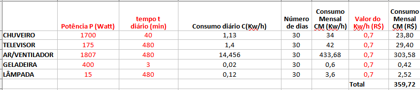
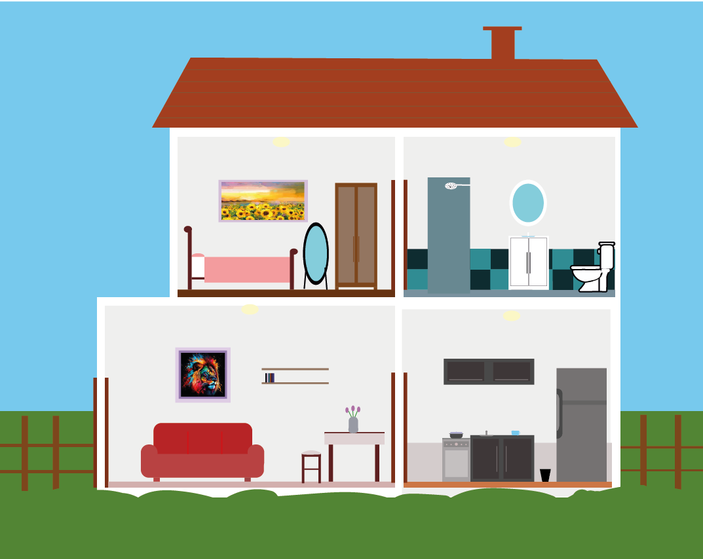

Trabalho Multidiciplinar de Educação Financeira - Tabelas e comodos
Página inicial
Tabela dos custos
Casa

Português (Professora Mariza)
Na parte de Português nos fizemos um texto que está logo abaixo:
No texto que você irá ler agora, eu, Felipe de Lima Silva, irei mostrar os dados do meu trabalho de matemática sobre educação financeira.
Com o chuveiro de 1700 watts de potência, e 2 banhos de 20 minutos totalizando 40 minutos ao dia, com o valor do watt em 0,70, teve um consumo diário de 1,13 reais e mensal de 23,80, gastando 34 kw/h ao mês.
Com o meu monitor de potência 175 watts, gastei 1,4 reais diariamente, usando ele 8 horas ou 480 minutos, gastei 29,40 reais ao mês e 42 kw/h ao mês.
Com o ar condicionado, como estava calor no dia da pesquisa, usei ele 8 horas por dia, com uma potência de 1807 watts, gastei 14 reais por dia, gastei 433,68 kw/h por mês e 304,58 reais por mês.
Com a geladeira que uso pouco, 3 minutos ao dia e com potência de 400 watts, gastei 0,02 reais ao dia, 0,6 kw/h por mês e 0,42 reais por mês.
Com o último item da lista, minha lâmpada, com potência de 15 watts e usando ela por 8 horas no dia, gastei 0,12 reais diariamente, 2,52 reais mensalmente e 3,6 kw/h mensalmente.
